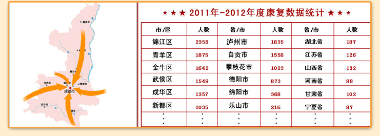

丨你是否羡慕那些风光无限的体育运动冠军，但你可曾知道，在冠军光环的背后，是超乎常人的付出和与病魔作斗争的坚强意志。除了时间上的付出， 他们比其他行业的从业者还多了份受伤的风险。在中国体育史上，因伤在黄金年龄退役的运动员多不胜数。如何为运动员在运动期做好治疗和预防、在受伤 后及时进行科学救护、以及退役后伤病的康复治疗，又有谁来关心呢？丨
丨由于长期高强度训练，运动员是最容易受伤却又"最伤不起"的群体。一旦受伤，轻则影响竞技状态，重则结束职业生涯――姚明选择退役，最主要 的原因就是左脚第3次应力性骨折；而刘翔的脚伤，让他的复出希望越来越渺茫丨
丨医院好不好，患者心中有杆秤，基于西南骨科医院在运动康复方面的突出成就，全国各地运动康复患者慕名前来，成功重获健康体魄的患者亲身 见证了医院的好口碑。近年来众多外地患者来成都西南骨科医院治病，已经成为一种趋势，甚至是常态。丨
如果您对自己的病情还有什么疑惑，可以通过"在线咨询"与专业医生在线交流，也可以直接通过电话交流！
西南骨科医院专家咨询热线：028-85596750


Copyright2005-2020 www.xinanguke.com All Rights Reserved. 成都权威骨科疾病专科医院
成都西南骨科医院 版权所有(蜀)ICP备06869956号-1
乘车路线：乘公交车53路、72路、175路、334路、368路到双丰路站下车即到，乘公交车41路、84路、92路、147路、210路、242路、904路到武侯大道武阳大道口站下车回走400米即到查看地图>>
地址：成都市武侯大道双楠段38号（二环高架武侯大道出口处）
咨询电话：028-85596750/85596760/62566666
特别声明：本站内容仅供参考，不作为诊断及医疗依据，详情请遵医嘱或咨询医师

微信扫一扫
在线专家帮你
解决骨病困扰